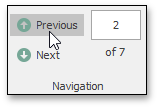
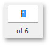
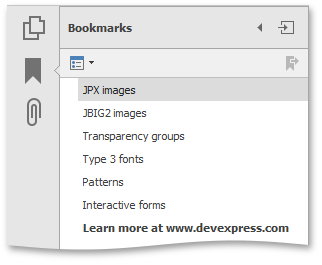
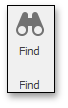
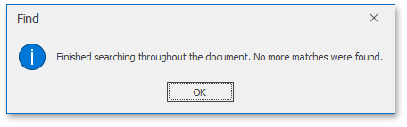

Navigate and View a Document
This document provides information on using the PDF Viewer user interface to navigate through the document content.
The topic consists of the following sections.
Navigate Between Pages
To navigate between pages, use one of the following.
- The scrollbars.
Previous and Next navigation buttons.

These buttons allow you to switch to the previous or next page of a document.
The Pager that is used to show the current page number and the total number of pages in a document.

To change the page number in the Pager, type a new page number and press ENTER.
The Bookmarks panel located on the Navigation pane.

To jump to a topic, click a bookmark.
The Page Thumbnails panel located on the Navigation pane.

To jump to the page in a document, click a page thumbnail in the Page Thumbnails panel.
Navigate Between Views
To change the page view, use one of the following.
Right-click this document and select the Previous View
 or Next View
or Next View  item in the invoked context menu.
item in the invoked context menu.
or...
press Alt+Left or Alt+Right.
Move a page with the Hand tool.
The Hand tool enables you to scroll content by dragging the document instead of using scrollbars.
To activate the Hand tool, right-click the viewing document and select the Hand Tool
 item in the context menu.
item in the context menu.
Then, after you click the document's page, the mouse pointer is changed from
 to
to  . Drag the mouse pointer to scroll the document.
. Drag the mouse pointer to scroll the document.- Use zoom toolbars to change page magnification. For more details, see the Adjust the Document View topic.
Search for a Specific Text
To search for a specific text within a document, click the Find button on the toolbar.

To invoke the Find dialog using the context menu, right-click the document and select the Find  item in the context menu.
item in the context menu.

In the Find dialog, type the text you want to search for and specify the following settings (if required):
The Case Sensitive option specifies whether to ignore the letter case when searching text.
The Whole Words Only option only considers whole words when searching text. For example, it does not find the word types when you search for type.

- To start searching, click the Next button in the Find dialog, or press the ENTER key when the PDF Viewer shows the Find dialog.
The PDF Viewer stops searching when it finds the first occurrence of the search text, highlights the occurrence and navigates to the highlighted text.
To search for the next match, click the Next button in the Find dialog, or press the ENTER key again when the PDF Viewer shows the Find dialog.
To go to the previous match, click the Previous button.
The PDF Viewer shows the following message when it finds the final occurrence of the search text or there were no results that match the search text.
